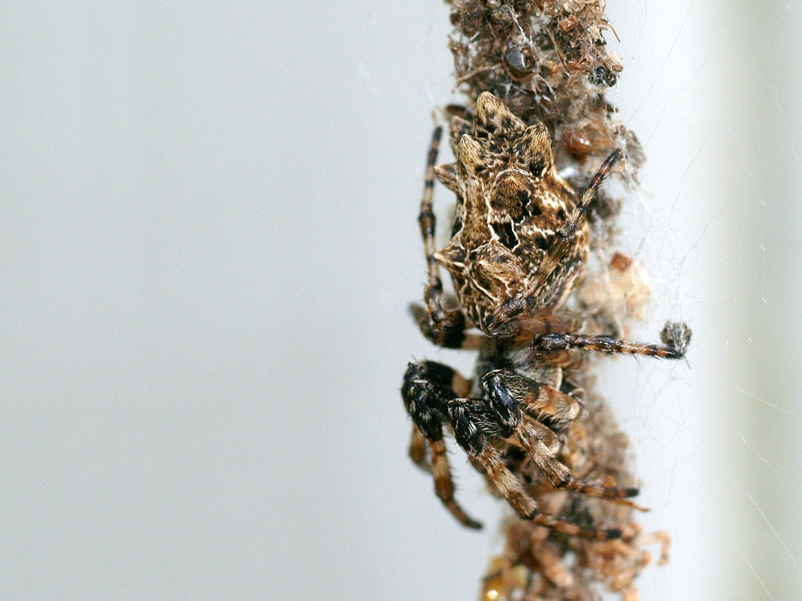

"Spiders appear to offload cognitive tasks to their webs, making
them one of a number of species with a mind that isn’t fully confined within the head."
Millions of years ago, a few spiders abandoned the kind of round webs that the word “spiderweb” calls to mind and started to focus on a new strategy. Before, they would wait for prey to become ensnared in their webs and then walk out to retrieve it. Then they began building horizontal nets to use as a fishing platform. Now their modern descendants, the cobweb spiders, dangle sticky threads below, wait until insects walk by and get snagged, and reel their unlucky victims in.
In 2008, the researcher Hilton Japyassú prompted 12 species of orb spiders collected from all over Brazil to go through this transition again. He waited until the spiders wove an ordinary web. Then he snipped its threads so that the silk drooped to where crickets wandered below. When a cricket got hooked, not all the orb spiders could fully pull it up, as a cobweb spider does. But some could, and all at least began to reel it in with their two front legs.
Their ability to recapitulate the ancient spiders’ innovation got Japyassú, a biologist at the Federal University of Bahia in Brazil, thinking. When the spider was confronted with a problem to solve that it might not have seen before, how did it figure out what to do? “Where is this information?” he said. “Where is it? Is it in her head, or does this information emerge during the interaction with the altered web?”
In February, Japyassú and Kevin Laland, an evolutionary biologist at the University of Saint Andrews, proposed a bold answer to the question. They argued in a review paper, published in the journal Animal Cognition, that a spider’s web is at least an adjustable part of its sensory apparatus, and at most an extension of the spider’s cognitive system.
This would make the web a model example of extended cognition, an idea first proposed by the philosophers Andy Clark and David Chalmers in 1998 to apply to human thought. In accounts of extended cognition, processes like checking a grocery list or rearranging Scrabble tiles in a tray are close enough to memory-retrieval or problem-solving tasks that happen entirely inside the brain that proponents argue they are actually part of a single, larger, “extended” mind.
Among philosophers of mind, that idea has racked up citations, including supporters and critics. And by its very design, Japyassú’s paper, which aims to export extended cognition as a testable idea to the field of animal behavior, is already stirring up antibodies among scientists. “I got the impression that it was being very careful to check all the boxes for hot topics and controversial topics in animal cognition,” said Alex Jordan, a collective behaviorial scientist at the Max Planck Institute in Konstanz, Germany (who nonetheless supports the idea).
While many disagree with the paper’s interpretations, the study shouldn’t be confused for a piece of philosophy. Japyassú and Laland propose ways to test their ideas in concrete experiments that involve manipulating the spider’s web — tests that other researchers are excited about. “We can break that machine; we can snap strands; we can reduce the way that animal is able to perceive the system around it,” Jordan said. “And that generates some very direct and testable hypotheses.”
The suggestion that some of a spider’s “thoughts” happen in its web fits into a small but growing trend in discussions of animal cognition. Many animals interact with the world in certain complicated ways that don’t rely on their brains. In some cases, they don’t even use neurons. “We have this romantic notion that big brains are good, but most animals don’t work this way,” said Ken Cheng, who studies animal behavior and information processing at Macquarie University in Australia. Parallel to the extended cognition that Japyassú sees in spiders, researchers have been gathering examples from elsewhere in the animal kingdom that seem to show a related concept, called embodied cognition: where cognitive tasks sprawl outside of the brain and into the body. Perhaps the prime example is another eight-legged invertebrate. Octopuses are famously smart, but their central brain is only a small part of their nervous systems. Two-thirds of the roughly 500 million neurons in an octopus are found in its arms. That led Binyamin Hochner of the Hebrew University of Jerusalem to consider whether octopuses use embodied cognition to pass a piece of food held in their arms straight to their mouths. For the octopus, with thousands of suckers studding symmetric arms, each of which can bend at any point, building a central mental representation of how to move seems like a computational nightmare. But experiments show that the octopus doesn’t do that. “The brain doesn’t have to know how to move this floppy arm,” Cheng said. Rather, the arm knows how to move the arm.
Readings of electric signals show that when a sucker finds a piece of food, it sends a wave of muscle activation inward up the arm. At the same time, the base of the arm sends another wave of clenched muscles outward, down the arm. Where the two signals meet each other, the arm makes an elbow — a joint in exactly the right place to reach the mouth.
Yet another related strategy, this one perhaps much more common and less controversial, is that the sensory systems of many animals are tuned in to the parts of the world that are relevant to their lives. Bees, for example, use ultraviolet vision to find flowers that have also evolved ultraviolet markings. That avoids the need to take in lots of data and parse it later. “If you do not have those receptors, that part of the world simply doesn’t exist,” said William Wcislo, a behaviorist at the Smithsonian Tropical Research Institute in Panama.
And then there are animals that appear to offload part of their mental apparatus to structures outside of the neural system entirely. Female crickets, for example, orient themselves toward the calls of the loudest males. They pick up the sound using ears on each of the knees of their two front legs. These ears are connected to one another through a tracheal tube. Sound waves come in to both ears and then pass through the tube before interfering with one another in each ear. The system is set up so that the ear closest to the source of the sound will vibrate most strongly.
In crickets, the information processing — the job of finding and identifying the direction that the loudest sound is coming from — appears to take place in the physical structures of the ears and tracheal tube, not inside the brain. Once these structures have finished processing the information, it gets passed to the neural system, which tells the legs to turn the cricket in the right direction.
Extended cognition may partly be an evolutionary response to an outsized challenge. According to a rule first observed by the Swiss naturalist Albrecht von Haller in 1762, smaller creatures almost always devote a larger portion of their body weight to their brains, which require more calories to fuel than other types of tissue.
Haller’s rule holds across the animal kingdom. It works for mammals from whales and elephants down to mice; for salamanders; and across the many species of ants, bees and nematodes. And in this latter range, as brains demand more and more resources from the tiny creatures that host them, scientists like Wcislo and his colleague William Eberhard, also at the Smithsonian, think new evolutionary tricks should arise.
In 2007, Eberhard compared data on the webs built by infant and adult spiders of the same species. The newborns, roughly a thousand times smaller than the adults in some cases, should be under much more pressure from Haller’s rule. As a result, they might be expected to slip up while performing a complex task. Perhaps the spiderlings would make more mistakes in attaching threads at the correct angles to build a geometrically precise web, among other measures. But their webs seemed “as precise as that of their larger relatives,” Eberhard said. “One of the questions is: How do they get away with that?”
Japyassú’s work offers a possible solution. Just as octopuses appear to outsource information-processing tasks to their tentacles, or crickets to their tracheal tubes, perhaps spiders outsource information processing to objects outside of their bodies — their webs.
To test whether this is truly happening, Japyassú uses a framework suggested by the cognitive scientist David Kaplan. If spider and web are working together as a larger cognitive system, the two should be able to affect each other. Changes in the spider’s cognitive state will alter the web, and changes in the web will likewise ripple into the spider’s cognitive state.

As is true for a tin can telephone, a tighter string is better at passing along vibrations. Tensed regions, then, may show where the spider is paying attention. When insects land in tensed areas of the webs of the orb spider Cyclosa octotuberculata, a 2010 study found, the spider is more likely to notice and capture them. And when the experimenters in the same study tightened the threads artificially, it seemed to put the spiders on high alert — they rushed toward prey more quickly.
The same sort of effect works in the opposite direction, too. Let the orb spider Octonoba sybotides go hungry, changing its internal state, and it will tighten its radial threads so it can tune in to even small prey hitting the web. “She tenses the threads of the web so that she can filter information that is coming to her brain,” Japyassú said. “This is almost the same thing as if she was filtering things in her own brain.”
Even skeptics of the extended cognition idea agree that this back and forth between the web and spider is ripe ground for more investigation and debate on how to interpret what the spiders are doing to solve problems. “It introduces a biological setup to the philosophers,” said Fritz Vollrath, an arachnologist at the University of Oxford. “For that, I think it’s very valuable. We can start a discussion now.”
But many biologists doubt that this interplay adds up to a bigger cognitive system. The key issue for critics is a semantic — but crucial — distinction. Japyassú’s paper defines cognition in terms of acquiring, manipulating and storing information. That’s a set of criteria that a web can easily meet. But to many, that seems like a low bar. “I think we’re fundamentally losing a distinction between information and knowledge,” Wcislo said. Opponents argue that cognition involves not just passing along information, but also interpreting it into some sort of abstract, meaningful representation of the world, which the web — or a tray of Scrabble tiles — can’t quite manage by itself.
Further, Japyassú’s definition of cognition may even undersell the level of thought that spiders are capable of, say the spider behaviorists Fiona Cross and Robert Jackson, both of the University of Canterbury in New Zealand. Cross and Jackson study jumping spiders, which don’t have their own webs but will sometimes vibrate an existing web, luring another spider out to attack. Their work suggests that jumping spiders do appear to hold on to mental representations when it comes to planning routes and hunting specific prey. The spiders even seem to differentiate among “one,” “two” and “many” when confronted with a quantity of prey items that conflicts with the number they initially saw, according to a paper released in April.
“How an animal with such a small nervous system can do all this should keep us awake at night,” Cross and Jackson write in an email. “Instead of marveling at this remarkable use of representation, it seems that Japyassú and Laland are looking for an explanation that removes representation from the equation — in other words, it appears they may actually be removing cognition.”